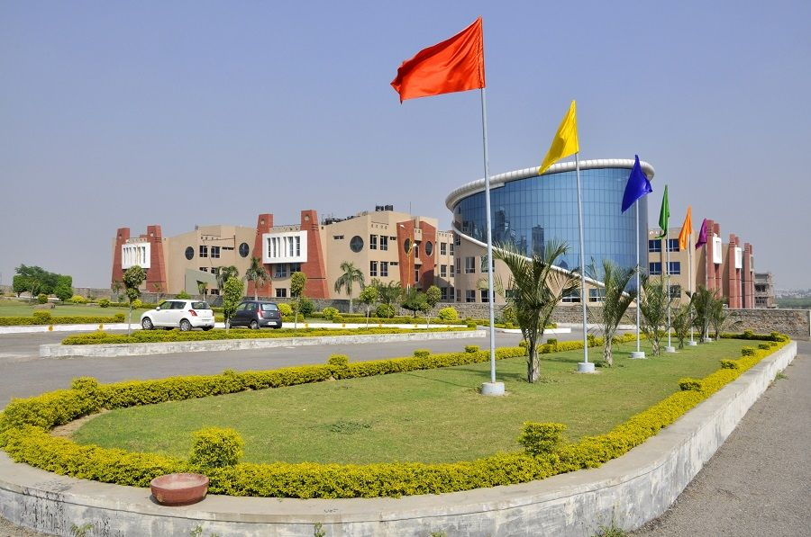

Manav Rachna University (MRU), located in Faridabad, Haryana, is a leading private university established in 2014 after evolving from the Manav Rachna College of Engineering (2004). It is part of the Manav Rachna Educational Institutions (MREI) group. The university is recognized by UGC and its programs are approved by AICTE. It also holds NAAC ‘A’ accreditation, NBA accreditation, and the QS I-GAUGE Diamond rating, highlighting its strong academic quality. MRU offers a wide range of undergraduate, postgraduate, and doctoral programs in engineering, management, sciences, law, humanities, and design, with a curriculum aligned to NEP 2020 for flexibility and skill development. With over 2000+ research publications, patents, and strong industry tie-ups (with IBM, Microsoft, AWS, etc.), MRU actively promotes innovation and entrepreneurship. Its placements are strong, with top packages reaching ₹54 LPA and an average of around ₹5 LPA. The university also provides a vibrant campus life, international collaborations, and opportunities for students from India and abroad, making it a hub for learning, research, and professional growth.
| S no | Name | Min Qual | Year |
| 1 | Jigyanshu | 12 | 2023 |
| 2 | Monu | graduation | 2024 |
| 3 | Sonu | bca | 2024 |
| 4 | Yogesh | B.ed | 2022 |
| 5 | Ankit | Bcom | 2021 |